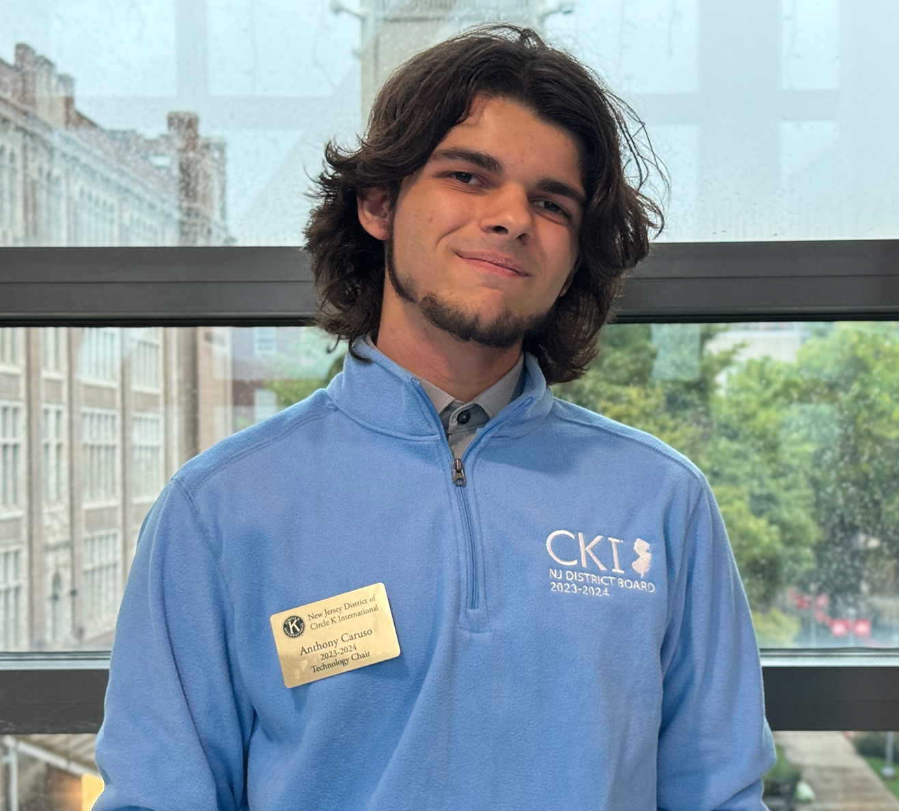

Hi! I'm Anthony Caruso

I am a student, developer, traveler, game enthusiast, and co-founder of ReFilament! Currently, I am an undergraduate
student at the New Jersey Institute of Technology (NJIT) pursuing a degree in Computer Science. Currently, I spend
most of my time running between classes, trying to get my startup off the ground, and engaging with my community
through the various clubs and community service organizations I work with!
Nothing makes me happier than building or designing something that can help others or is just interesting! This
website itself is a great example (and has some fun features like the polaroids I wanted to make), but on top
of that I have designed and maintained professional websites and resources for a few organizations and companies
I worked with in the past! I am confident in my abilities and can fill a plethora of roles on any team with my
experience and comprehension skills, plus I am a friendly and outgoing (but not too extravertive) individual! Feel
free to start a conversation with me through my email/socials or just say hi! I am always
more than happy to meet and connect with new people!
Anyways, have fun exploring my website and feel free to check out my projects page to
see some of the cool things I worked on in the past!